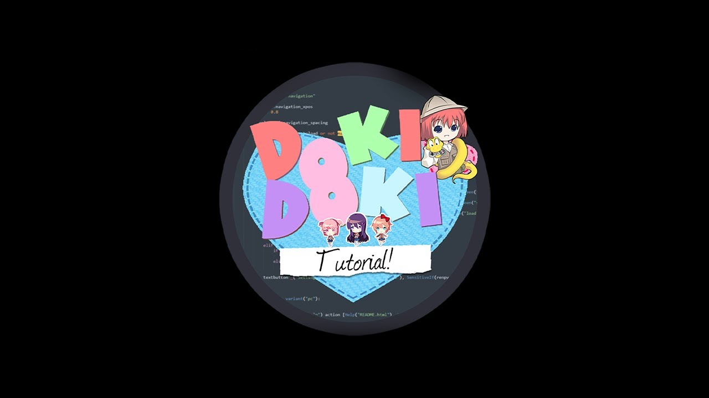

Doki Doki Tutorial
Um mod que finalmente fornece um tutorial adequado para os próximos modders, expandindo o Modelo de modificação e o tutorial de modificação do subreddit. Como assim, não é sobre isso que o mod é? Perdi alguma coisa? Aviso: Extraia o Arquivo usando o 7Zip ou o WinRar para evitar qualquer erro. Agradecimento a LonesomeDev por ter ajudado a editar imagens a colocar os arquivos em RPA.
⬇ Download